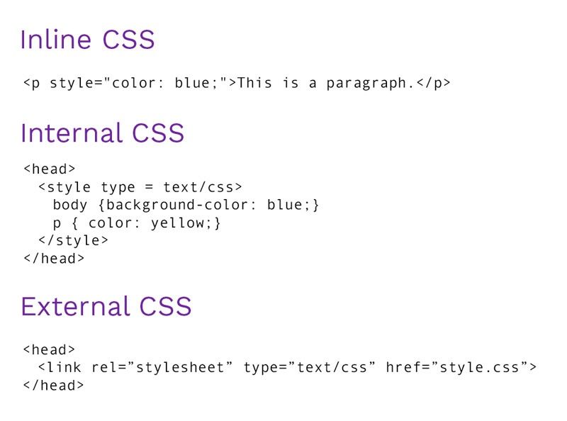
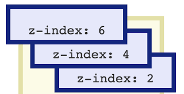
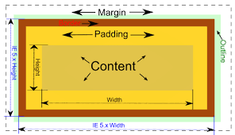
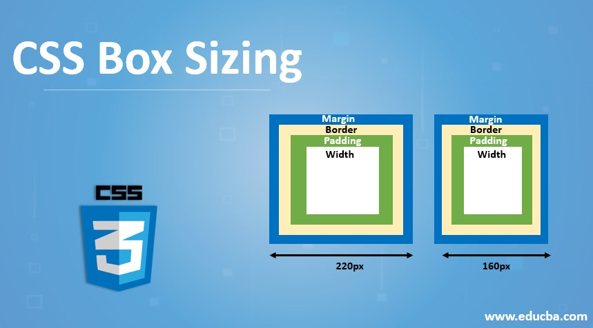
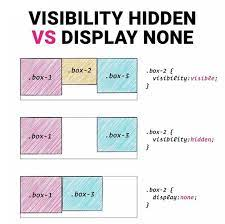

Flex row is a property of flex layout which aligns items horizontally and
Flex column is a property of flex layout which aligns items vertically
through cross-axis.
Inline CSS: Requires the style attribute placed inside an HTML element. Internal CSS: Requires the style element placed inside the head section of an HTML file. External CSS: Requires the link element placed inside the head section of an HTML file. 
Justify-content is a css grid laylout and flex layout property allows us to align the items horizontally.the properties of justify content are flex start,flex end,center,space around etc.
An absolute position element is positioned relative to the first parent element that has a position other than static. A relative positioned element is positioned relative to its normal position. To position an element relatively, the property position is set as relative.
The grid-template-columns property specifies the number (and the widths) of columns in a grid layout. The values are a space separated list, where each value specifies the size of the respective column.Its default value is none.
Z Index ( z-index ) is a CSS property that defines the order of
overlapping HTML elements. Elements with a higher index will be placed on
top of elements with a lower index.If two positioned elements overlap
without a z-index specified, the element positioned last in the HTML code
will be shown on top.

In CSS, a margin is the space around an element's border, while padding is
the space between an element's border and the element's content. Put
another way, the margin property controls the space outside an element,
and the padding property controls the space inside an element.

The box-sizing CSS property sets how the total width and height of an
element is calculated. content-box: This is the default value of the
box-sizing property. In this mode, the width and height properties include
only the content. Border and padding are not included in it i.e if we set
an element’s width to 200 pixels, then the element’s content box will be
200 pixels wide, and the width of any border or padding will be added to
the final rendered width. Syntax: box-sizing: content-box;
border-box: In this mode, the width and height properties include content,
padding, and borders i.e if we set an element’s width to 200 pixels, that
200 pixels will include any border or padding we added, and the content
box will shrink to absorb that extra width. This typically makes it much
easier to size elements.

The animation-delay CSS property specifies the amount of time to wait from applying the animation to an element before beginning to perform the animation. The animation can start later, immediately from its beginning, or immediately and partway through the animation.
We will use grid-column-start and grid-column-end and the short hand property for it is grid-column
We will use grid-row-start and grid-row-end and the short hand property for it is grid-row
The CSS box model is essentially a box that wraps around every HTML element. It consists of: margins, borders, padding, and the actual content.
Display:none hides the element from the page, and the space it would take up on the page can be used by other elements. visibility:hidden hides the elements, but it continues to consume the space it normally would. 